Published: 2023-02-22
Original link: https://www.cnphotos.net/academy/show-118.html
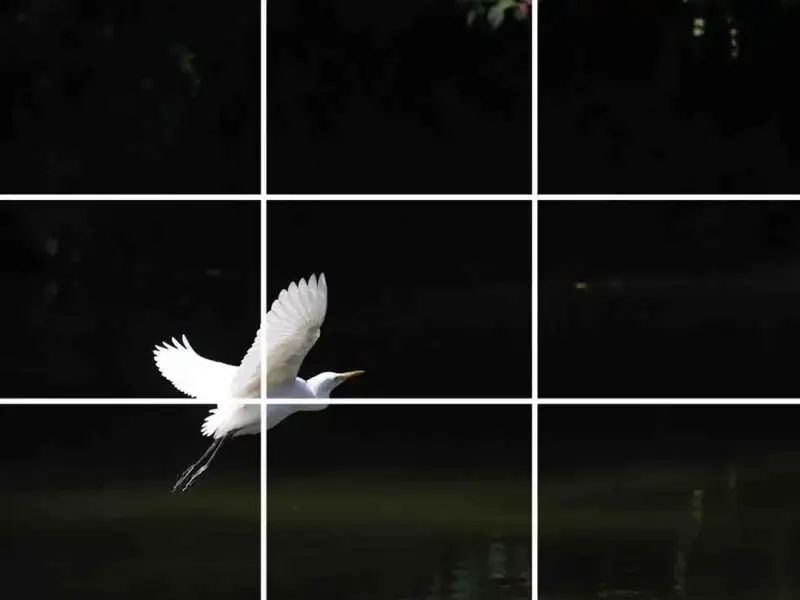
photo by Aksh Goel
Have you ever taken a photo by hand that looked perfect right away? You may have followed the rule of thirds without knowing it. The rule of thirds is a photography guideline. It makes photos look better, and it helps you take better photos.
What Is the Rule of Thirds in Photography?
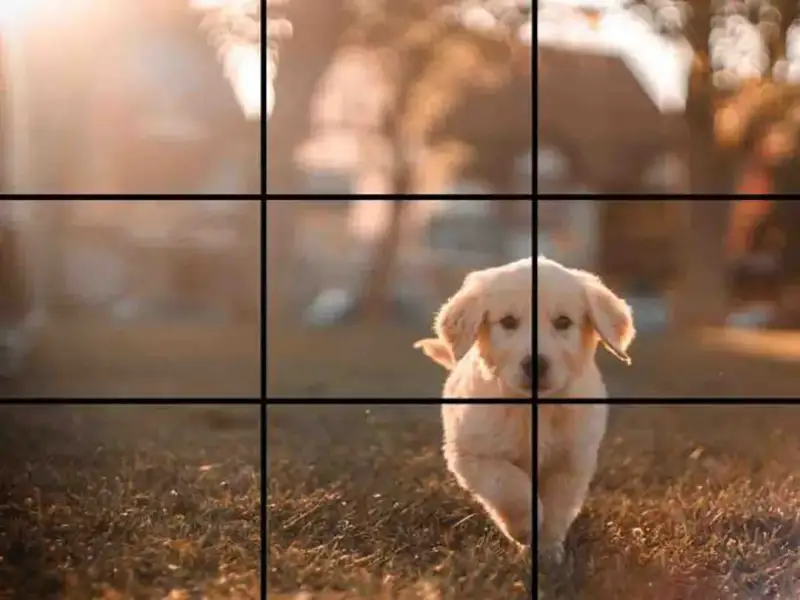
Photo by Cristian Castillo
The rule of thirds is one of the most basic principles of photography. You divide the frame into three equal parts vertically and horizontally. You place the subject off center, at the intersection of the grid. Photos taken this way look more pleasing.
The rule of thirds works for any type of photo, from landscape to portrait and everything in between. When you compose, just imagine a grid over the scene and place the subject at one of the intersections. By following the rule of thirds, you can easily take more visually appealing photos.
Who Invented the Rule of Thirds?
You may wonder: Where does the rule of thirds come from? Who thought it up, and how long has it existed?
1797 - John Thomas Smith
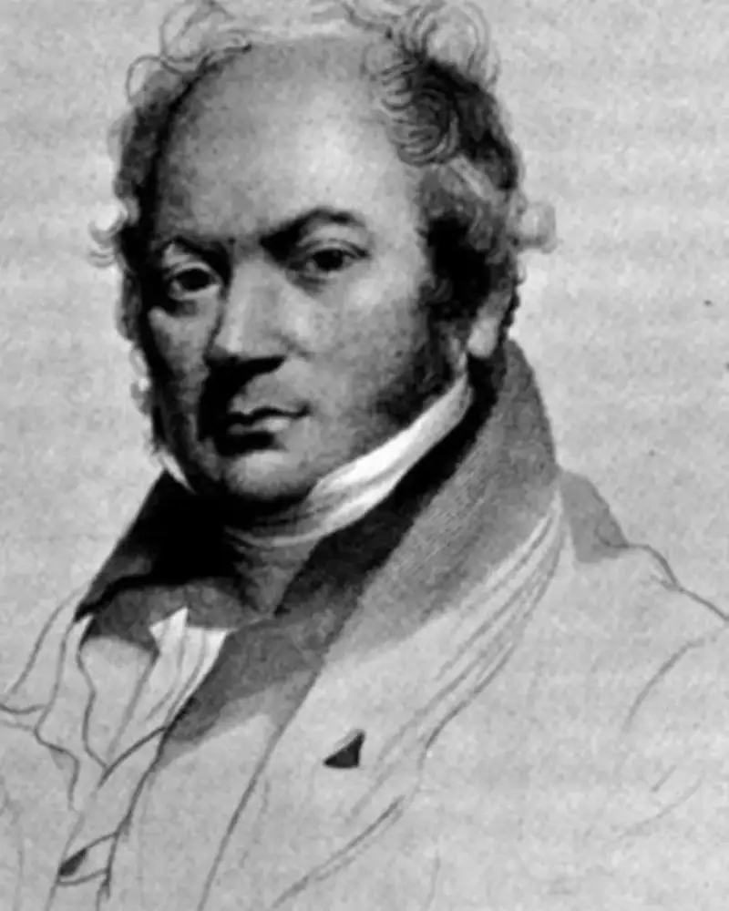
Image source: Wikipedia
The rule of thirds has long been a rule of thumb for composition in the visual arts, such as painting, photography, and design. It says the image should be split into nine equal parts by two equally spaced horizontal lines and two equally spaced vertical lines. Important elements of the composition should sit along these lines or at their intersections.
The rule claims it creates visual interest through a more balanced and pleasing composition. It gives intuitive guidance to new photographers, designers, and artists.
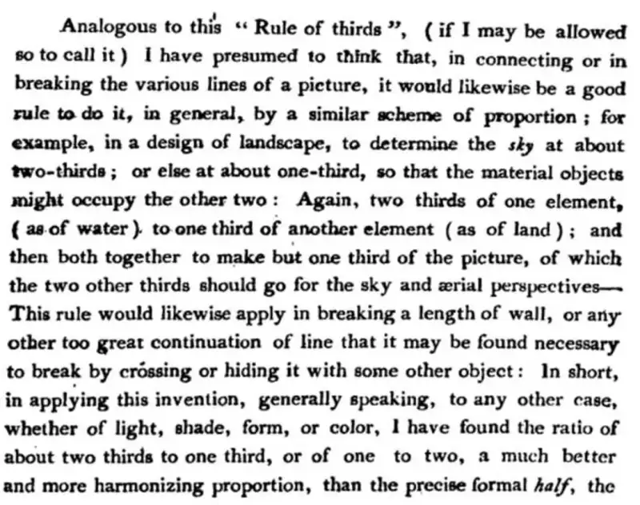
From John Thomas Smith's 'Remarks on Rural Scenery.' Source: Wikipedia
Although artists have used the rule of thirds for centuries, John Thomas Smith first described it formally in his 1797 work 'Remarks on Rural Scenery.' In it, Smith described the rule of thirds in a painting by Sir Joshua Reynolds, and how he used light and dark to create a sense of balance.
Since then, the rule has spread widely through art and design courses, books, and articles. It has become one of the best-known guides for creating visually appealing images.
Why Do We Use the Rule of Thirds?
The rule of thirds is one of the most basic and important composition guidelines in photography. When the subject is off center, the image is more visually appealing. Unlike a static, symmetric arrangement, this layout allows a more dynamic and engaging composition.
Also, the rule of thirds helps create leading lines and S-curves, which further guide the viewer's eye through the image. In the end, the goal is a more natural, pleasing image that gives a better overall viewing experience.
Every rule has exceptions, but the rule of thirds is a good starting point for anyone who wants to improve their photo composition.
How Do You Use the Intersections?
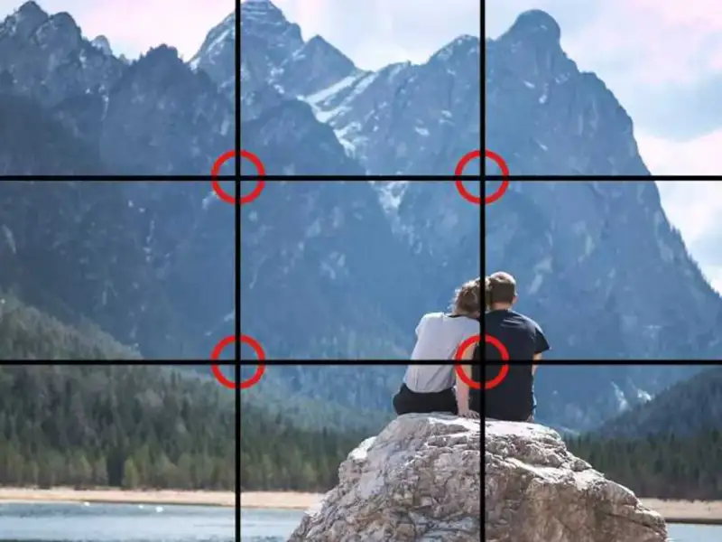
Photo by Timo Stern
In essence, the rule of thirds says the image should be split into three parts horizontally and vertically. The key elements of the scene sit at the intersections of these lines.
The four points where the lines cross are called 'power points.' In theory, if you place the subject on one of these points, it is more visually appealing than placing it dead center.
Photo by Julie Tupas
To help you picture this, many phones and cameras have an optional 3x3 grid that you can turn on in the viewfinder or on the LCD screen. With this grid, just align a key element with one of the grid intersections, and you can easily create a harmonious, balanced composition.
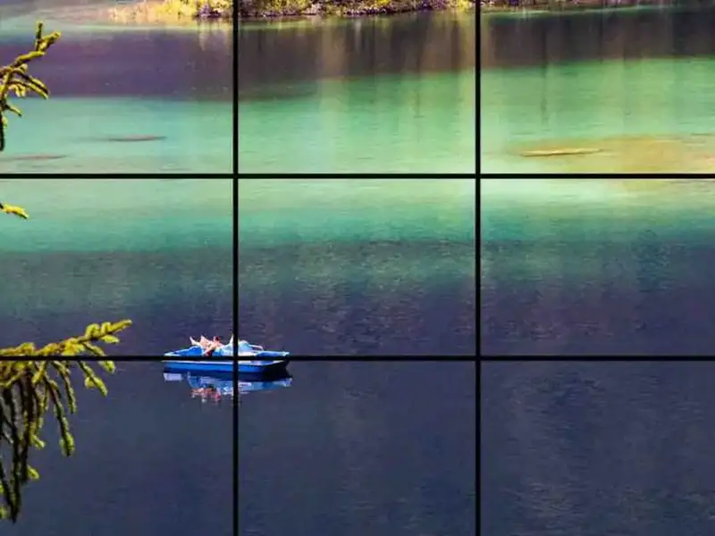
Photo by Tanja Cotoaga
There are a few different ways to use it. One way is to place a key element at one of the intersections. This helps draw the viewer's eye into the photo and creates a more lively composition.
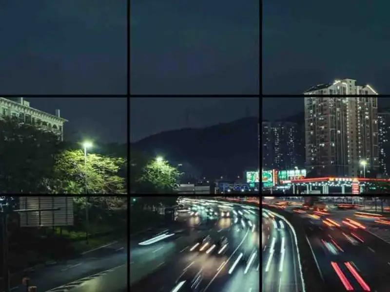
Photo by Joshua Fernandez
Another way is to place elements along a vertical or horizontal line. This helps create a sense of motion in the photo and guides the viewer's eye through the scene. In the end, try different positions to find the best method for each photo.
How Do You Use the Rule of Thirds in Photography?
The rule of thirds is used in many types of photography, especially landscape, architecture, and portrait.
Landscape
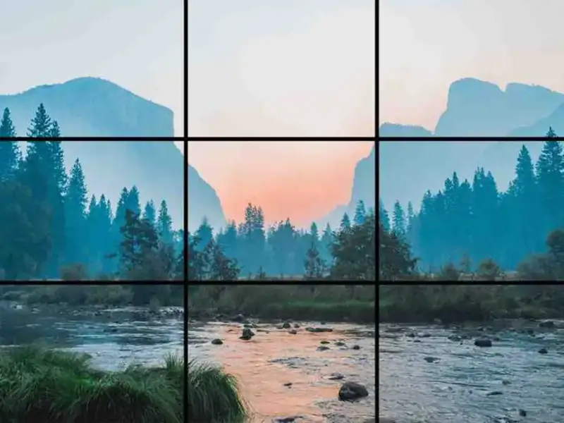
Photo by Bailey Zindel
The rule of thirds is useful for landscape photos, because it keeps the horizon from sitting in the middle and looking unbalanced. Placing the horizon along a horizontal third helps create a more natural and visually appealing composition.
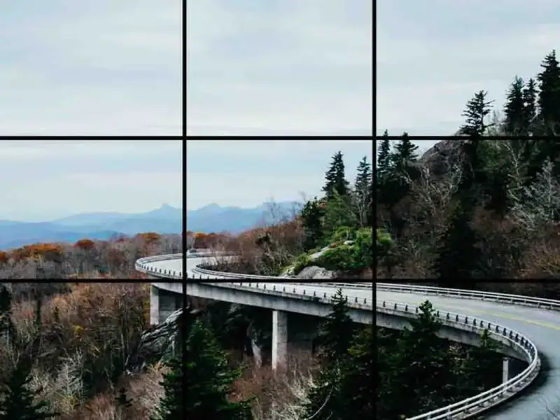
Photo by Ashley Knedler
An S-curve, also called a 'line of beauty,' is a line that moves smoothly through the image along the curves and rises of the landscape. It is usually created by a winding road or river.
You can use the rule of thirds to emphasize these S-curves or leading lines. This helps guide the viewer through the shot and creates a more lively overall composition.
Architecture
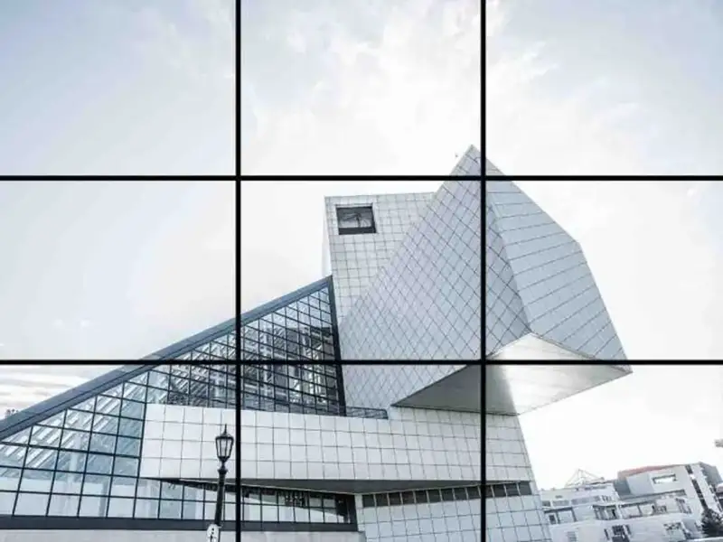
Photo by Lance Anderson
Architecture has long been one of the most popular subjects for photographers. The clean lines and geometric shapes of buildings contrast sharply with the organic forms of nature.
You can use leading lines to draw the viewer's eye through the scene and create more interest.
For example, you can place an interesting building along a vertical line to suggest motion and draw the eye upward. This helps the viewer feel they are in the space, rather than just looking at a photo. When you shoot buildings, use a polarizing filter to cut glare and show colors and detail that might otherwise be lost in shadow. In the end, you can create unique, dynamic architectural images by using negative space, changing your angle to create diagonals, and suggesting motion.
Portrait
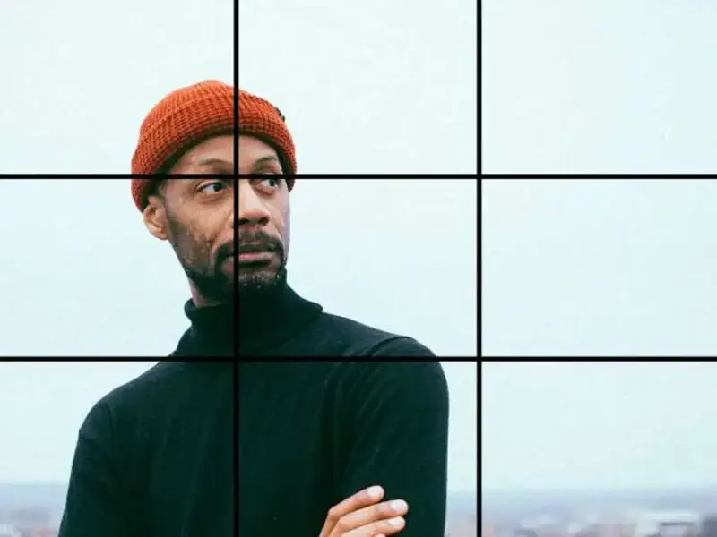
Photo by Philip Martin
The rule of thirds is also useful for portraits. It helps you avoid placing the subject's nose dead center.
If the subject is perfectly centered, it can create a 'confrontational' look, which you may not want. If you shift the subject to one side or tilt the head, you create a more natural look that draws the viewer in. It also feels more lively and visually appealing.
To create this natural look, place the subject's eyes according to the rule of thirds.
Can You Ignore the Rule of Thirds?
The rule of thirds is a rule of thumb for composition.
Of course, like almost all rules, the rule of thirds is meant to be broken.
The rule of thirds is a good starting point for many compositions, but breaking it can sometimes produce a more visually interesting image.
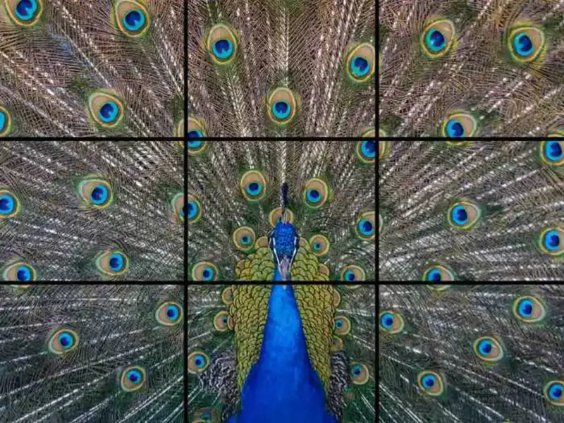
Photo by Steve Harvey
For example, when you want to emphasize the symmetry of a subject, placing it in the center of the frame creates a sense of stability and balance.
So, while the rule of thirds is a useful guideline, do not be afraid to break it when another composition looks better.
Conclusion
The rule of thirds is one of the most basic and famous principles in photography, and for good reason. You can use it to create more beautiful images by simply dividing the frame into a 3x3 grid. But do not let the rule box you in. Breaking it sometimes produces a stronger or more interesting photo.
Try shooting with your camera or phone using the rule of thirds, and enjoy using this basic principle to improve your photography.